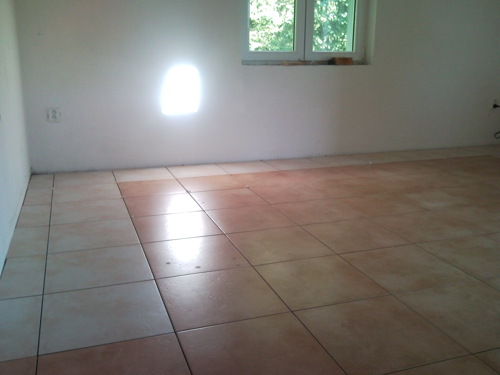

Řemeslnické služby pro Ondřejov, Senohraby, Mnichovice, Benešov, Říčany a okolí
Jsem František Šubrt, řemeslník s dlouholetou praxí působící v regionu Praha-východ a Benešovsko. Specializuji se na instalatérské, stavební a truhlářské práce pro domácnosti i firmy v okolí Ondřejova.
Kompletní řemeslnické služby v Ondřejově
Instalatérské práce Ondřejov
Kompletní instalatérské služby včetně:
- Opravy a výměna vodovodních baterií
- Montáž a opravy umyvadel, van, WC
- Odstraňování ucpání odpadů
- Montáž praček, myček, bojlerů
- Drobé opravy rozvodů vody
Působnost: Ondřejov, Senohraby, Mnichovice, Říčany, Benešov
Stavební práce Ondřejov
Drobné stavební úpravy a opravy:
Působnost: Celý region Praha-východ
Truhlářské práce Ondřejov
Kvalitní truhlářské služby:
- Výroba nábytku na míru
- Opravy dveří, oken, nábytku
- Montáž kuchyňských linek
- Výroba polic, regálů, skříní
- Zahradní truhlářské práce
Působnost: Ondřejov a okolní obce
Hodinový manžel Ondřejov
Rychlá pomoc pro domácnosti:
- Drobné opravy všeho druhu
- Montáž nábytku a spotřebičů
- Údržba domácnosti
- Sezónní přípravy
- Rychlé zásahy do 24 hodin
Působnost: Okolí Ondřejova do 20 km
Hodinový manžel – rychlá pomoc pro domácnosti a firmy v Ondřejově a okolí
Jako hodinový manžel pro Ondřejov, Senohraby, Mnichovice, Benešov a Říčany nabízím rychlou a spolehlivou pomoc s drobnými opravami, montážemi a údržbou. Efektivně vyřeším problémy, se kterými si nevíte rady, a to za transparentní a férové ceny.
Moje služby hodinového manžela jsou ideální pro:
- Seniory a rodiny s dětmi, kteří potřebují občasnou pomoc
- Firmy a podnikatele s drobnými údržbářskými potřebami
- Majitele rekreačních objektů v okolí Ondřejova
- Všechy, kteří nemají čas nebo nástroje na drobné opravy
Transparentní ceny a cenové zvýhodnění
Vždy vám poskytnu jasnou a předem domluvenou cenovou nabídku bez skrytých poplatků. U větších projektů nebo pravidelných služeb nabízím cenové zvýhodnění. Dodržování termínů a kvalitní práce jsou pro mě samozřejmostí.
Bezplatná konzultace a cenová nabídka
Zavolejte mi pro nezávaznou konzultaci a cenovou kalkulaci:
+420 604 590 261
nebo napište na: fandasubrt@seznam.cz
Kvalita práce a spokojenost zákazníků
Kladu důraz na vysokou kvalitu práce a spokojenost zákazníků. Všechny práce provádím pečlivě a s ohledem na vaše potřeby. Pokud máte dotazy nebo potřebujete poradit, neváhejte mě kontaktovat. Rád vám pomohu realizovat vaše představy.
Jako řemeslník v Ondřejově garantuji:
- Kvalitní materiály a provedení
- Dodržení dohodnutých termínů
- Čistotu při práci a po dokončení
- Záruku na provedené práce
- Osobní přístup a flexibilitu
Omezení služeb
Specializuji se na drobné práce, opravy a montáže v Ondřejově a okolí. Kompletní stavební projekty nebo rozsáhlé rekonstrukce nezajišťuji. Pokud potřebujete drobné opravy, montáže nebo údržbu, rád vám pomohu.
Moje působnost jako řemeslníka: Primárně Ondřejov a obce do 30 km: Senohraby, Mnichovice, Říčany, Benešov, Mirošovice, Strančice, Hrusice, Turkovice a další.
Příklady mé práce v Ondřejově a okolí
Zde jsou ukázky realizovaných prací v regionu Ondřejov, Senohraby, Mnichovice, Benešov a Říčany:



Všechny práce byly realizovány v okolí Ondřejova s důrazem na kvalitu a spokojenost zákazníků.
Potřebujete řemeslníka v Ondřejově nebo okolí?
Kontaktujte mě ještě dnes!
+420 604 590 261
Email: fandasubrt@seznam.cz
Působnost: Ondřejov, Senohraby, Mnichovice, Benešov, Říčany a okolí
Rychlá reakce, férové ceny, kvalitní práce.